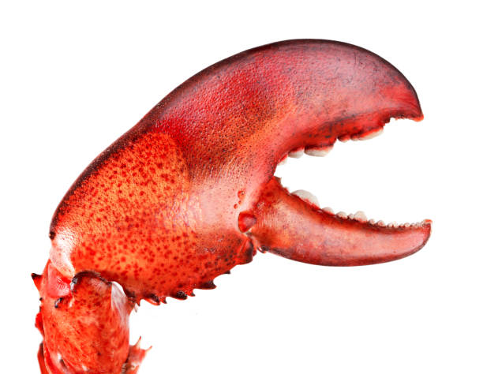

NemoClaw quickstart
Here's are quick and simple guide to setting up and using NemoClaw with some things I learned while setting up NemoClaw for myself.
- Follow instructions as found on the NemoClaw getting started page.
After the installer complets you can onboard models.curl -fsSL https://www.nvidia.com/nemoclaw.sh | bash - The installer also gave me an HTTP endpoint I could use to access the OpenClaw UI, this makes chatting easier.
- Open another terminal and run:
This will let you manage things like the OpenShell proxy allowlist. By default OpenClaw cannot reach the outside world.openshell term - As you set up skills and other interactions, keep checking the proxy allowlist and allow the appropriate things for the agent to function.
In practice
My "Claw" (?) is set up with the Claude API. The token I created can spend a maximum of 25 dollars to make sure that I don't burn a large hole in my creditcard. I might give it access to more spending when I feel comfortable with the way it will operate without my constant supervision.
My first attempts using self-hosted models on my gaming rig all failed because an RTX3070 lacks the required VRAM to host models that can properly deal with all the tool calling that happens when you interact with OpenClaw.

After some simple experiments like a weather report and setting up its personality I hooked it up to my Home Assistant.
I added another user to my HA instance and put it in the system-read-only group (again, for my own safety haha). After giving the long-lived token and host address it loaded all the entities and gave me a nice overview of the people and their presence, status of my air-condition systems, power consumption and that I left my 3D printer on without an active print! First success in the bag.
While chatting through the UI works fine, I really want a simpler way of accessing my LLM powered assistant. I have a pre-paid SIM-card on the way that I'm going to put in an old phone and hook my claw (is this the word?) up to Signal so I can send it messages from my phone.
Being able to ask questions about the state of my home through this is already a huge win. I have a lot more ideas and APIs I could let it access to make my life a little easier. The first one I want to try is get some nice news summaries from my RSS aggregator.
I guess the only real bottleneck I have now (and certainly in the future) is the Claude API. It works great but it's certainly not free. For now it'll do but this is not a scalable solution because it'll burn through money quite quickly as the system is churning away at your requests.
Staying in control
I've been giving it access to systems in a readonly mode to start. My inner controlfreak is not ready to deal with an "agent" with the capability to ruin things into my life just yet. There will be use-cases where it will make sense to give it more control but for now, read-only it is.